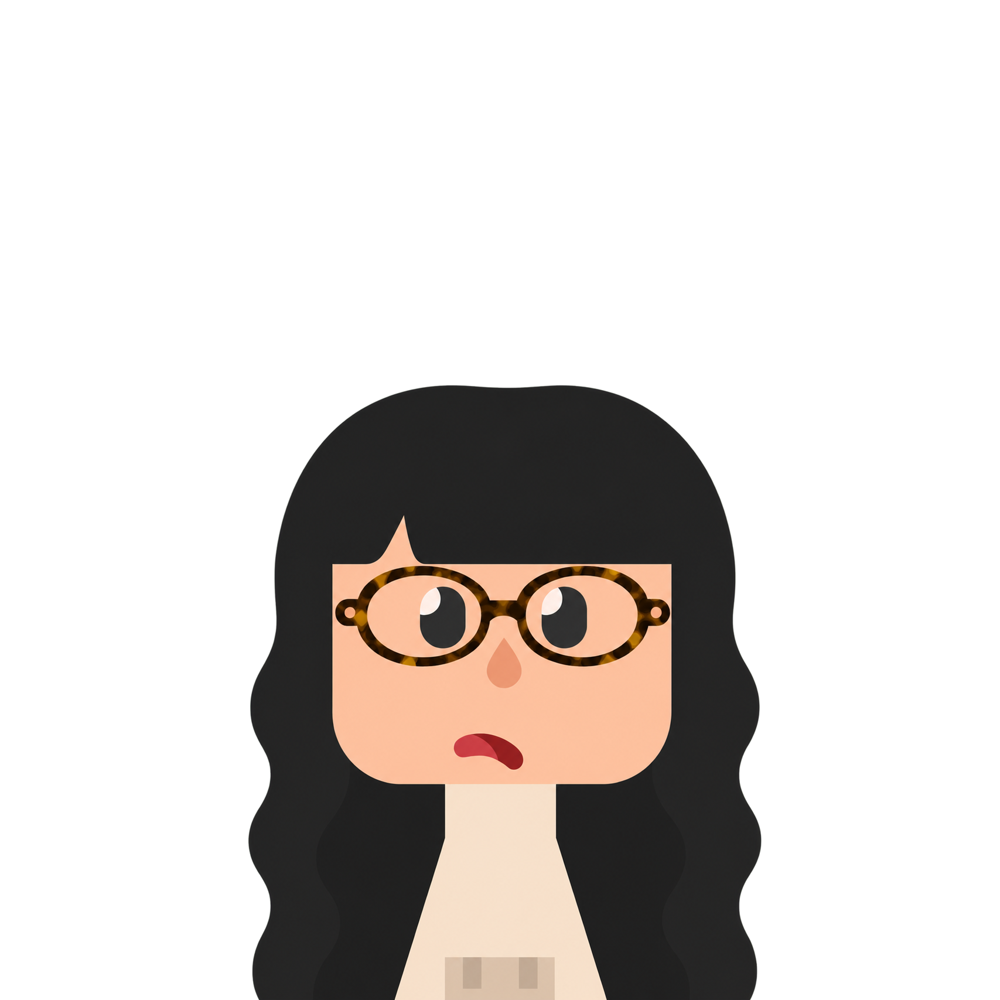

Ginny Dong

Ginny is a UX designer with a background in human factors psychology and visual arts. She studies how people think and decide, and turn that into interfaces that are clear and easy to trust.

This is a paragraph.